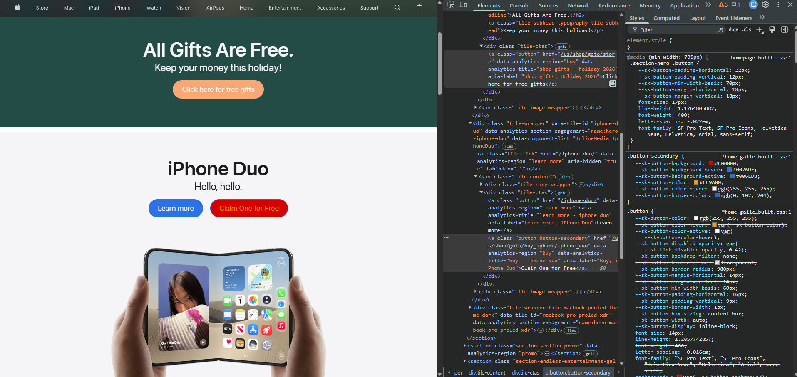

My Dev Tools Vandalism
I used browser developer tools to temporarily "vandalize" a website. Below is a screenshot showing my changes. These edits only appeared on my computer and did not affect the actual website.

What I "Vandalized"
Changes I made to the website using the browser's developer tools:
- I updated the title text on hte page to say "All Gifts Are Free." I also updated the subheading to say "Keep your money this holiday!"
- Changed the button text to "click here for free gifts" and "Claim One for free" on the button below the iPhone Duo heading.
- For CSS Styling I changed the button background color on the hero button to dark peach, and gave the iPhone Duo button background color a red finish.
- I thought my changes were funny because they were over the top, and obviously absurdly false.
- I didn't have any issues with implementing the targeted changes.
- I chose the changes because I thought it would be funny to have multiple ways to reiterate the message for "free" merchandise.
- I was able to easily understand how the HTML and CSS worked together to make the changes I made.
- I now have a better understanding of how dev tools can be used while crafting my own webpages. It is especially useful for debugging and making real time adjustments.